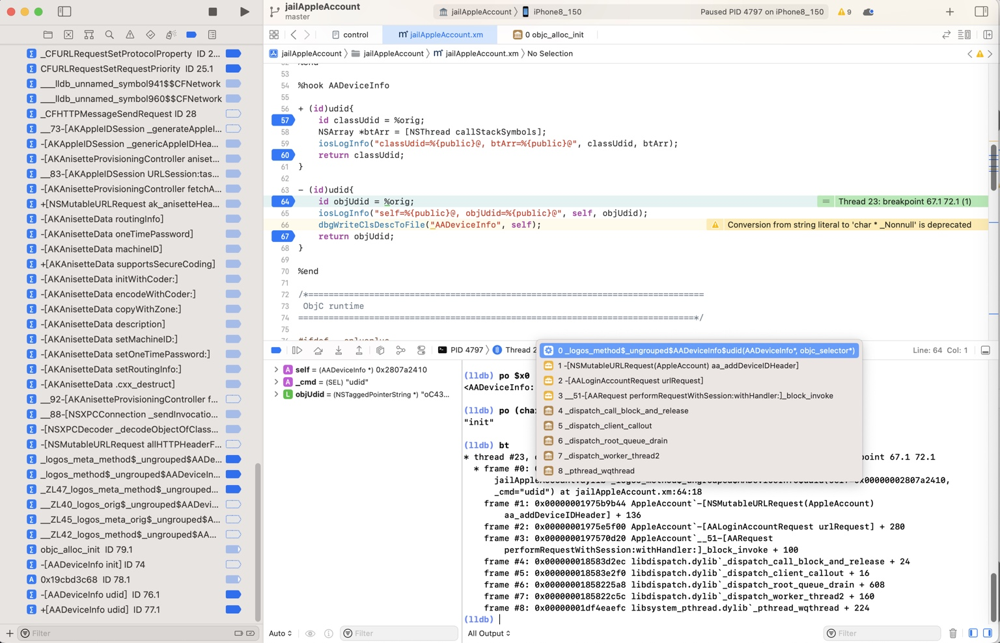
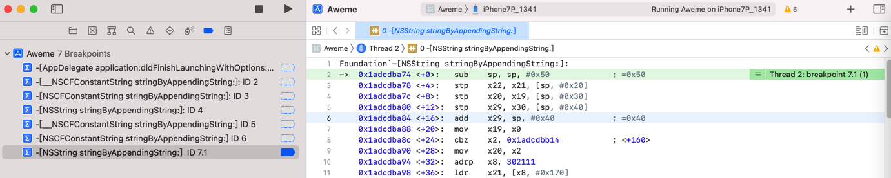

断点没触发
举例
AppleAccount的函数：+[AADeviceInfo udid]和-[AADeviceInfo udid]
- 现象
- （iOSOpenDev的）hook插件可以触发
- 但是：debugserver+lldb调试时，断点可以加上，但是却无法触发（断点）
- 原因：调试目标不匹配
- iOSOpenDev的插件的hook目标是：
com.apple.Preferences=设置app - Xcode调试目标是：
akd二进制
- iOSOpenDev的插件的hook目标是：
- 解决办法：确保目标一致
- 插件代码的hook目标是：
com.apple.Preferences=设置app=Preferences - Xcode去调试的目标是：
Preferences进程（的PID）- 注：此处Preferences的PID=4797
- 
- 注：此处Preferences的PID=4797
- 插件代码的hook目标是：
-[__NSCFConstantString stringByAppendingString:]
XCode调试抖音ipa崩溃，发现崩溃日志是：
Terminating app due to uncaught exception 'NSInvalidArgumentException', reason: '*** -[__NSCFConstantString stringByAppendingString:]: nil argument'
以为对应symbol函数是：
-[__NSCFConstantString stringByAppendingString:]:
去添加断点，结果：断点没触发
最后确认，问题的原因和解决办法分别是：
- 此处有2层错误
- 第一层是：语法错误 -》 函数名有误
- 末尾多了个冒号
:-[__NSCFConstantString stringByAppendingString:]:- 因此：实际上函数断点也没加上，更不会触发断点
- 应该改为：
-[__NSCFConstantString stringByAppendingString:]
- 末尾多了个冒号
- 第二层是：类名搞错了
- 不是
__NSCFConstantString，而是NSString- 此处函数（的类）搞错了，此处实际上应该用（
__NSCFConstantString的所属的CF=CoreFoundation）对应的NS的类：NSString
- 此处函数（的类）搞错了，此处实际上应该用（
- 所以应该写成
-[NSString stringByAppendingString:]
- 不是
- 第一层是：语法错误 -》 函数名有误
即可正常触发断点，效果是：

objc_alloc_init
Xcode中加的条件判断的断点：
- 函数objc_alloc_init
(bool)[$x0 isKindOfClass: (Class)objc_getClass("AADeviceInfo")]
- 函数objc_alloc_init 内的汇编代码
(bool)[$x0 isKindOfClass: (Class)objc_getClass("AADeviceInfo")]
没有生效的原因：
（1）
- 函数objc_alloc_init
- (bool)[$x0 isKindOfClass: (Class)objc_getClass("AADeviceInfo")]
- 没生效的原因
- (bool)[$x0 isKindOfClass: (Class)objc_getClass("AADeviceInfo")]
objc_alloc_init传入参数是Class，此处isKindOfClass不适用于Class，只适用于Instance，所以无效。
（2）对于条件判断写法：
(bool)[$x0 isKindOfClass: objc_getClass("AADeviceInfo")]
之前经过lldb命令测试发现objc_getClass返回的结果类型无法识别：
(lldb) po [$x0 isKindOfClass: objc_getClass("AADeviceInfo")]
error: expression failed to parse:
warning: <user expression 25>:1:2: receiver type 'unsigned long' is not 'id' or interface pointer, consider casting it to 'id'
[$x0 isKindOfClass: objc_getClass("AADeviceInfo")]
^~~
error: <user expression 25>:1:21: 'objc_getClass' has unknown return type; cast the call to its declared return type
[$x0 isKindOfClass: objc_getClass("AADeviceInfo")]
所以最后要改为：
(bool)[$x0 isKindOfClass: (Class)objc_getClass("AADeviceInfo")]
才至少确保语法上是正确的（至少po可以正常解析执行）
(lldb) po [$x0 isKindOfClass: (Class)objc_getClass("AADeviceInfo")]
nil
（3）之前的：
- 函数objc_alloc_init 内的
- 汇编代码
libobjc.A.dylib`objc_alloc_init: ... 0x19cbd3c68 <+44>: b 0x19cbcd000 ; objc_msgSend - 的条件判断
(bool)[$x0 isKindOfClass: (Class)objc_getClass("AADeviceInfo")]- 没有生效
- 汇编代码
应该就是此处最终找到的原因：
实际上是代码本身没运行到，所以断点没触发
而断点的条件判断：
(bool)[$x0 isKindOfClass: (Class)objc_getClass("AADeviceInfo")]
本身，对于
0x19cbd3c68 <+44>: b 0x19cbcd000 ; objc_msgSend
来说是正确的，没有问题的。
而实际上是代码本身没运行到，是由于：
- 之前的：插件hook的目标（
com.apple.Preferences）和Xcode调试的目标（akd）不一致，导致的
此处已经解决了此处问题，确保：
- 现在的：插件hook的目标（
com.apple.Preferences）和Xcode调试的目标（com.apple.Preferences的PID）是一致的
就确保代码能执行到，可以触发，条件判断语法是正确的断点了。
（4）对于最新的断点：
objc_alloc_init(bool)[NSStringFromClass($x0) isEqualToString: @"AADeviceInfo"]
后续经测试确认，也是可以正常触发断点的。